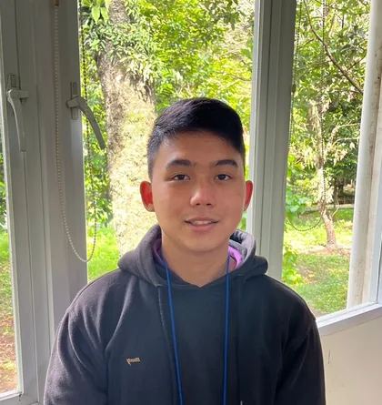

● CYBERSECURITY · BLUE TEAM
Understanding threats.better defenses. I’m Raymond, a cybersecurity professional turning security signals into meaningful detection, response, and automation.
BASED IN INDONESIA / FOCUSED ON ENTERPRISE DEFENSE

Maximilianus Raymond KusnadiIT Security Blue Team Security operations ✳ Threat detection ✳ Incident response ✳ Security automation
01 / ABOUT ME
A curious mind. I work at the intersection of security operations and engineering: investigating suspicious activity, refining detection logic, and making repeatable response workflows more effective.
My background combines enterprise Blue Team work with hands-on projects in penetration testing, threat modeling, networking, and software development.
SIEM & alert tuning SOAR playbooks Threat hunting Incident response Python Log onboarding
Security operations experience presented as impact areas.
June 2024 — Present
Bank OCBC Indonesia · Tangerang
Performed 24x7 security monitoring across systems, applications, and network infrastructure using SIEM, XDR, firewall, and security tooling.
Analyzed and triaged security alerts, identified suspicious endpoint and network patterns, and supported rapid containment and threat validation.
Supported threat hunting by collecting and correlating logs, events, and indicators of compromise.
Implemented honeypots to observe attacker activity and exploitation techniques, enriching organizational threat intelligence.
Developed, tuned, and optimized SIEM correlation rules and query logic to reduce false positives and alert noise.
Built SOAR playbooks for recurring threat scenarios to improve response consistency for high-frequency alerts.
Identified unintegrated security log sources and executed log onboarding, parsing, and normalization into the SIEM.
Produced threat and vulnerability analysis for security advisories, patch management, and risk remediation workflows.
SIEM XDR Firewall Endpoint Security SOAR Threat Hunting Honeypots Log Normalization
February 2023 — February 2024
PT. Japfa Comfeed Indonesia · Jakarta
Executed phishing simulation campaigns to evaluate and improve employee awareness against cyber-attacks.
Organized educational sessions covering cybersecurity awareness, data protection, password management, and threat recognition.
Conducted assessments and compliance scanning to identify vulnerabilities and support risk mitigation.
Monitored SIEM activity for real-time detection, analysis, and response to security incidents and anomalies.
Phishing Simulation Security Awareness Compliance Scanning SIEM Monitoring Vulnerability Assessment
04 / FOUNDATIONS
Always learning. 2020 — 2024 Bina Nusantara University Computer Science · Cyber Security
APR 2024 — APR 2027 Certified Ethical Hacker EC-Council
View credential ↗